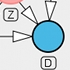

| Launch | Download | Read | Communicate |
|---|---|---|---|
|  | |||
| Launch DAGitty online in your browser | Download DAGitty's source for offline use | Read the short manual | Join the mailing list or contact the author directly |
DAGitty is a browser-based environment for creating, editing, and analyzing causal models (also known as directed acyclic graphs or causal Bayesian networks). The focus is on the use of causal diagram for minimizing bias in empirical studies in epidemiology and other disciplines. As a gentle introduction to this subject, we recommend reading the paper "Reducing bias through directed acyclic graphs" by Ian Shrier and Robert W. Platt.
DAGitty is developed and maintained by Johannes Textor who is currently at the Theoretical Biology & Bioinformatics group at the University of Utrecht.
If you encounter any problems using DAGitty, or would like to have a certain feature implemented, please write to "johannes {dot} textor {at} gmx {dot} de". Your feedback and bug reports are highly welcome and they contribute to making using DAGitty a better experience for everyone. Past contributors are acknowledged in the manual.
Because the main purposoe of DAGitty is facilitating the use of causal models in empirical studies, it is and will always be Free software (both "free as in beer" and "free as in speech"). You can copy, redistribute, and modify it under the terms of the GNU general public license. Enjoy!
If you use DAGitty in your scientific work, please cite the following letter:
Johannes Textor, Juliane Hardt, Sven Knüppel.
DAGitty: A Graphical
Tool for Analyzing Causal Diagrams.
Epidemiology, 5(22):745, 2011.
The algorithms used in DAGitty are described in more depth the following paper:
Johannes Textor, Maciej Liśkiewicz.
Adjustment Criteria in Causal Diagrams: An Algorithmic Perspective.
In Proceedings of the 27th Conference on Uncertainty in Artificial Intelligence (UAI 2011), pp. 681-688, UAI press, 2011.
Yes.
If you know of another program that should be mentioned in this list, please e-Mail me.
The following versions of DAGitty are available:
2013-02-07
I am proudly announcing the release of DAGitty version 2.0, which has been vastly rewritten and improved under the hood. Some highlights are:
2012-01-20
Bugfix in v1.1 and development version: Bias caused by adjustment for descendant of exposure was not displayed correctly.
2011-11-29
Version 1.1 released.
2011-10-12
The development version now has experimental support for identifying direct effects via adjustment and for outputting testable implications of the model. Beta-testers are very welcome.
As a side node, I have moved to Utrecht University.
2011-03-24
DAGitty version 1.0 has been released.
2011-03-14
Another update to the development version; this is the release candidate for version 1.0. Most important changes:
2011-01-19
Some bugs fixed in the development version. We are getting closer to the release of 1.0!
2010-12-29